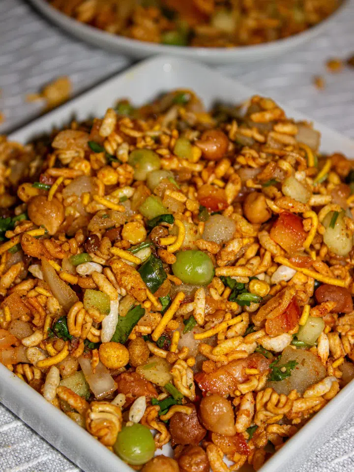

Home

Description
Ingredients
- Puff Rice
- Dalmot
- Oil
- Cucumber
- Tomato
- Onion
- Cilantro
- Chickpeas
- Lemon
- Potato
- Peas
- Chat masala
- Salt
- Chilli
- Wai Wai
- Chili powder
- Add the tomato, onion, green chili, cilantro, lemon juice, green peas, chickpeas, potato, all seasoning (chaat masala, chili powder, lemon juice, salt to taste), and wai wai seasonings to a mixing bowl.
- Mix well until all the ingredients are combined.
-
Crush the Wai Wai noodles into smaller pieces. Then, add noodles, puff rice, dalmot, and oil to the bowl. Mix well until all the ingredients are combined.
- Enjoy the delicious Wai Wai Chatpate. Serve immediately to retain its crunchiness; otherwise, it will be soggy.